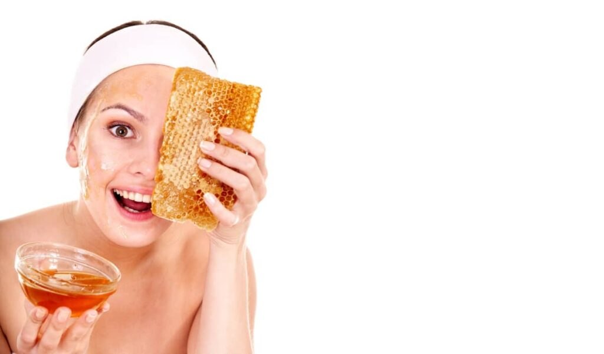

Beneficios de la Miel para la Salud
Publicado el: 6 de noviembre de 2024
Propiedades Principales
La miel es un alimento natural con una composición única que incluye antioxidantes, propiedades antimicrobianas y nutrientes esenciales. Contiene enzimas activas que ayudan a descomponer compuestos, mejorando su digestión y absorción por el cuerpo.
Además, los antioxidantes presentes en la miel, como los flavonoides y polifenoles, contribuyen a combatir los radicales libres, reduciendo el riesgo de enfermedades cardiovasculares y degenerativas. Su bajo contenido de agua y alto nivel de glucosa y fructosa la convierten en un conservante natural, ideal para mantener energía constante.
Minerales y Vitaminas
La miel contiene pequeñas cantidades de minerales como calcio, magnesio, potasio y zinc, que son esenciales para el funcionamiento celular. También es rica en vitaminas del complejo B, como la riboflavina (B2), niacina (B3) y ácido pantoténico (B5), fundamentales para la producción de energía y la regeneración celular.
Usos Terapéuticos
La miel es ampliamente utilizada como remedio natural para aliviar diversas dolencias. Su capacidad para reducir la inflamación y combatir bacterias la convierte en un ingrediente clave en la medicina natural.
Alivio de Dolores de Garganta y Tos
Unas cucharadas de miel mezcladas con agua tibia y limón son un remedio clásico para calmar dolores de garganta y reducir la tos. Su acción antimicrobiana ayuda a combatir infecciones en las vías respiratorias, mientras que su textura viscosa crea una capa protectora que reduce la irritación.
Mejora de la Salud Digestiva
La miel actúa como un prebiótico natural, alimentando las bacterias beneficiosas en el intestino. Esto ayuda a mantener una flora intestinal equilibrada, promoviendo una digestión saludable y reduciendo problemas como el estreñimiento o la acidez estomacal.
Curación de Heridas
Gracias a su efecto antimicrobiano y capacidad para mantener un ambiente húmedo, la miel se utiliza tópicamente para tratar heridas menores, quemaduras y úlceras. Estudios han demostrado que su uso acelera la cicatrización y reduce el riesgo de infecciones.
Otros Beneficios para la Salud
Incorporar miel en la dieta diaria puede proporcionar energía inmediata, lo que la hace ideal para deportistas o personas con un estilo de vida activo. Además, al ser un endulzante natural, puede ayudar a reducir la dependencia del azúcar refinado, contribuyendo al control de peso y al mantenimiento de niveles estables de glucosa en sangre.
La miel también es conocida por sus efectos calmantes, ayudando a mejorar la calidad del sueño cuando se consume antes de acostarse. Una taza de leche tibia con miel es un remedio tradicional para el insomnio.
Conclusión
La miel es mucho más que un simple endulzante. Es un superalimento que ofrece múltiples beneficios para la salud, desde reforzar el sistema inmunológico hasta mejorar la digestión y la cicatrización de heridas. Su versatilidad en la cocina y sus propiedades terapéuticas la convierten en un ingrediente esencial para quienes buscan un estilo de vida saludable y natural.
Incorporar miel en tu día a día es una forma sencilla y deliciosa de aprovechar los regalos de la naturaleza, mejorando tanto tu salud física como tu bienestar general.